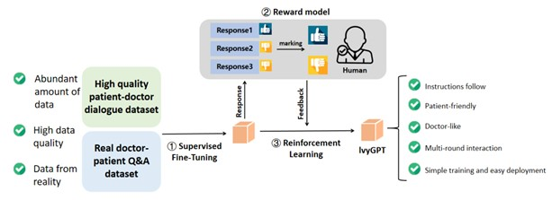

IvyGPT won the CICAI 2023 Demo Paper demonstration and achieved excellent performance in the CMB medical evaluation list

Published Wed 06 September 2023
In our laboratory, we have recently introduced IvyGPT, a new large language model (LLM) specifically designed to enhance medical applications. While general LLMs like ChatGPT have achieved significant success in various domains, their application in the medical field has been limited due to low accuracy and the inability to provide medical advice.
IvyGPT is built upon LaMA and trained using high-quality medical question-answer (QA) instances and human feedback reinforcement learning (RLHF). Through supervised fine-tuning, IvyGPT demonstrates excellent multi-turn dialogue capabilities. However, it falls short in tasks requiring comprehensive diagnosis, comparable to doctors. With the use of RLHF, IvyGPT can generate more sophisticated diagnosis and treatment responses that approach human-level performance.
During the training process, our laboratory employed the QLoRA method and trained IvyGPT with 3.3 billion parameters on a limited number of NVIDIA A100 (80GB) GPUs. Experimental results have demonstrated that IvyGPT outperforms other medical GPT models in the medical field. This study opens up new possibilities for integrating large language models into the medical domain, offering more accurate and comprehensive medical services for both doctors and patients.
To evaluate IvyGPT's performance, it was tested on the Comprehensive Medical Benchmark (CMB), a comprehensive and multi-level assessment in the Chinese language. The CMB consists of 280,839 multiple-choice questions and 74 complex case consultation questions, covering various clinical medical specialties and professional levels. The benchmark provides a holistic evaluation of a model's medical knowledge and clinical consultation capabilities. IvyGPT achieved an impressive score of 38.54 on the CMB, surpassing the performance of ChatGPT.
The CMB platform can be accessed at: CMB: Chinese Medical Benchmark. This benchmark serves as a valuable resource for evaluating and comparing medical language models.
Project leaders
RongshengWang
Project Example